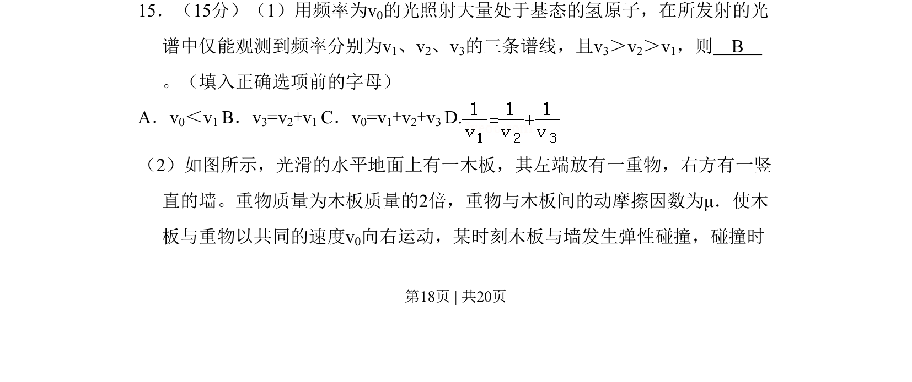
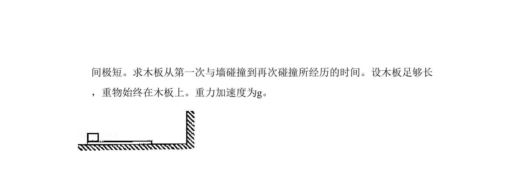
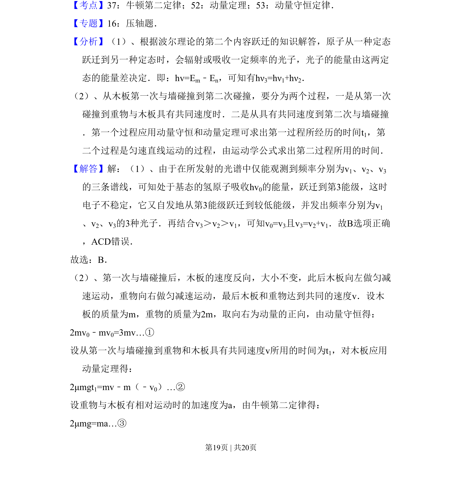
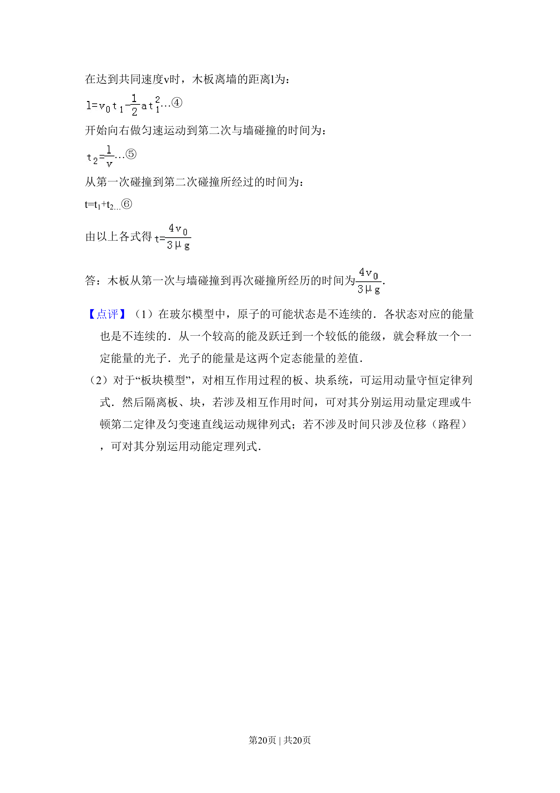

考点：频率关系 弹性碰撞 动量守恒定律


本题考查氢原子能级跃迁的频率关系与木板碰撞中的动量守恒问题。


📄 原 PDF 第 18 页：
素材/真题/吉林/2008-2024·（吉林）物理高考真题/2010年高考物理试卷（新课标Ⅰ）（解析卷）.pdf
15．（15分）（1）用频率为v0的光照射大量处于基态的氢原子，在所发射的光 谱中仅能观测到频率分别为v1、v2、v3的三条谱线，且v3＞v2＞v1，则 B 。（填入正确选项前的字母） A．v0＜v1 B．v3=v2+v1 C．v0=v1+v2+v3 D. （2）如图所示，光滑的水平地面上有一木板，其左端放有一重物，右方有一竖 直的墙。重物质量为木板质量的2倍，重物与木板间的动摩擦因数为μ．使木 板与重物以共同的速度v0向右运动，某时刻木板与墙发生弹性碰撞，碰撞时